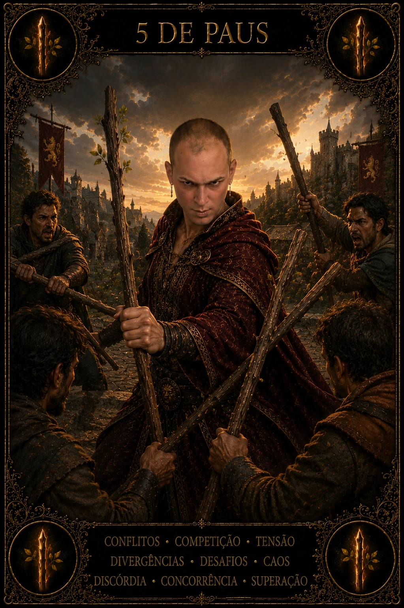

BIBLIOTECA DAS 78 CARTAS · PAUS
5 de Paus no Tarot
O 5 de Paus é o fogo encontrando outros fogos. Ele fala de competição, choque de interesses, ruído, provocação e aprendizado que surge quando diferentes vontades ocupam o mesmo campo. Nem todo conflito é destrutivo; alguns revelam limites, habilidades e regras que antes estavam implícitas. A carta pede discernir entre atrito produtivo e briga que só consome energia.
- atrito
- competição
- divergência
- teste de força
- aprendizado pelo confronto
- Arcano
- Arcano Menor
- Elemento
- Fogo
- Naipe
- Paus
- Chave
- tensão e transformação
- Orientação
- Direta
SIGNIFICADO E ENERGIA
O que 5 de Paus revela
No dia, pode haver agendas concorrentes, opiniões fortes, disputa por atenção ou necessidade de defender uma ideia. Antes de reagir, identifique qual é o jogo: estamos treinando, negociando, competindo ou apenas descarregando tensão? Nomear a natureza do conflito ajuda a escolher a intensidade adequada.
POTENCIAL
Luz
Na luz, o 5 de Paus desenvolve resistência, criatividade sob pressão e capacidade de testar ideias sem transformar discordância em ataque pessoal. A diversidade de perspectivas pode melhorar uma solução. Competição saudável revela competências e incentiva aprimoramento quando regras, limites e respeito permanecem claros.
PONTO DE ATENÇÃO
Tensão
Na tensão, surge provocação por ego, comparação constante, necessidade de vencer toda conversa, ambientes em que ninguém escuta ou conflitos que se multiplicam sem objetivo. O corpo pode permanecer em alerta mesmo quando a disputa não vale o custo. A carta convida a escolher batalhas e a perguntar qual resultado justificaria continuar esse embate.
VÍNCULOS E RECIPROCIDADE
5 de Paus no amor
Amor
No amor, o 5 de Paus pode mostrar química acompanhada de atrito, competição por atenção, discussões recorrentes ou diferença de prioridades. Discordar não significa que o vínculo está condenado, mas padrões de desrespeito não devem ser romantizados como paixão. A qualidade do reparo depois do conflito diz mais do que a intensidade da discussão.
Relacionamentos
Em grupos, família e amizades, a carta revela disputa de papéis, fala sobreposta e dificuldade de coordenação. Pode ser útil criar regras simples: quem decide, qual é o objetivo, quanto tempo a conversa terá e o que não será tolerado. Estrutura reduz ruído sem silenciar diferenças.
VIDA MATERIAL
Carreira e dinheiro
Carreira
Na carreira, é frequente em ambientes competitivos, brainstorms intensos, seleção, negociação ou equipes com prioridades conflitantes. Use o atrito para testar argumentos e melhorar propostas, mas documente decisões para que a energia não fique presa em reuniões repetidas. Competência também é saber colaborar com pessoas fortes.
Dinheiro
Financeiramente, o 5 de Paus pode refletir múltiplas demandas disputando o mesmo orçamento. Em vez de tentar atender tudo, classifique despesas por urgência, impacto e possibilidade de adiamento. Também alerta para compras motivadas por comparação social ou desejo de provar status.
CAMINHO INTERIOR
Espiritualidade
Na espiritualidade, a carta lembra que crescimento não exige ausência de conflito interno. Partes diferentes de você podem querer coisas incompatíveis. Escutar essa disputa com curiosidade pode revelar valores em choque e ajudar a construir uma decisão mais integrada.
LINGUAGEM VISUAL
Símbolos de 5 de Paus
- cinco figuras com bastões cruzados
- movimento desorganizado
- roupas diferentes como diversidade de posições
- bastões em várias direções
- campo sem vencedor claro
LEITURA EM CONJUNTO
Combinações com 5 de Paus
Uma combinação amplia perguntas e contexto; ela não transforma possibilidade em destino.
5 de Paus + 5 de Copas
A mesma etapa encontra dois territórios: ação, desejo e criatividade dialoga com afeto, vínculo e imaginação. Observe onde uma dimensão apoia ou contradiz a outra.
5 de Paus + O Hierofante
O padrão de 5 ganha uma chave arquetípica em O Hierofante; a combinação amplia consciência antes de transformar símbolo em decisão.
5 de Paus + 6 de Paus
A energia de 5 de Paus aponta para 6 de Paus: identifique o aprendizado necessário para que ação, desejo e criatividade avance sem perder medida.
INTEGRAÇÃO
Desafio e conselho
Desafio
O desafio é não transformar toda diferença em ameaça. Às vezes, defender-se imediatamente impede aprender. Em outras situações, recuar demais abandona um limite importante. O discernimento está em calibrar força, objetivo e custo.
Conselho
Defina o que realmente está em disputa. Se houver algo valioso a construir, estabeleça regras, escute argumentos e lute pelo problema — não contra a dignidade das pessoas. Se o conflito não produz aprendizado, limite, saída ou solução, considere retirar energia dele.
PERGUNTA DE REFLEXÃO
Este conflito está refinando algo importante ou apenas alimentando orgulho, comparação e desgaste?
Ação práticaEscolha um conflito atual e escreva: objetivo real, limite inegociável, ponto em que você pode ceder e condição que faria valer a pena continuar a conversa.
CONTINUE A JORNADA
O Tarot é um universo de 78 vozes
Explore todas as cartas em posição direta ou abra a mesa do Tarot Livre para revelar imagens sem repetição.